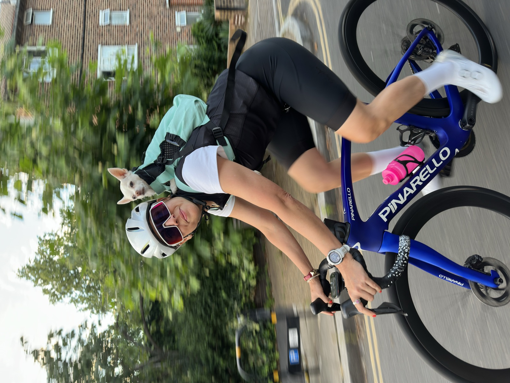
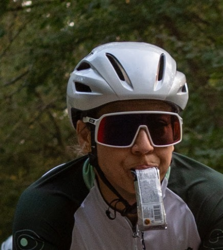
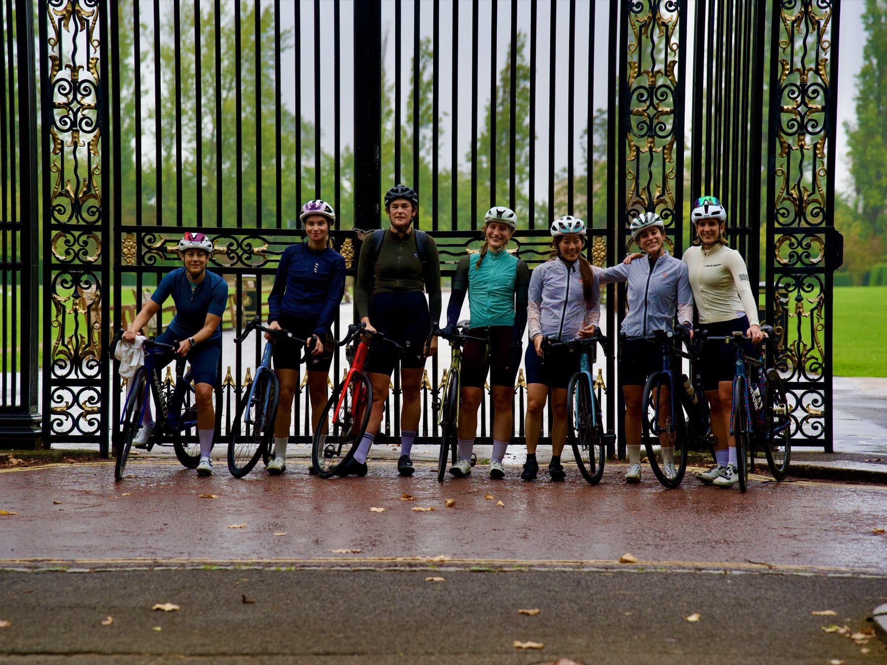

Hi, I’m Karima!
I’m a London-based cyclist and qualified British Cycling coach, passionate about helping female riders develop their skills, confidence and performance.


With a background in boxing and strength training, I bring an understanding of movement, technique and progressive training to my coaching.
My own cycling journey has taken me from recreational riding to endurance challenges and competitive criterium racing, giving me first-hand experience of the skills and challenges involved in becoming a stronger cyclist.
My coaching combines structured drills, technical development and individual feedback to help riders build confidence and make measurable progress.

I’m particularly passionate about supporting women’s cycling, creating opportunities for women of all abilities to learn, train and progress together.
For me, cycling is about discovering what you’re capable of and developing the skills to go further.
Supporting Maggie’s
I also organise coaching sessions supporting Maggie’s, a charity close to my heart.


Ready to progress?
Train with purpose. Progress together.
Choose the coaching format that works for you and take the next step in your riding.